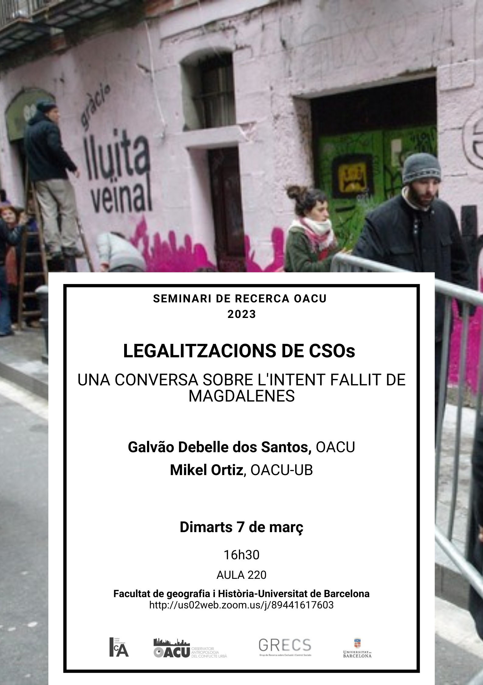

Legalitzacions de CSOs. Una conversa sobre l'intent fallit de Magdalenes
En aquesta sessió del Seminari OACU proposem una discussió sobre negociacions i intents de legalització de Centres Socials Okupats (CSO) partint de casos concrets esdevinguts a Barcelona. S'esmentaran casos recents d'intents de legalització per part de les autoritats municipals, com ara Kasa de la Muntanya i Can Masdeu, que il.lustren la relació complexa que s'estableix entre CSO's específics i els moviments dels quals els CSOs fan part. Fent una mica de memòria, també introduirem el cas de l'Espai Social Magdalenes (ESM), el primer CSO que va fer una proposta articulada i pública de legalització. Aquesta situació va generar posicionaments contundents de part d'alguns sectors del moviment, oposats a la legalització. El que llavors va semblar ser un conflicte anecdòtic entre corrents polítiques ultra-minoritàries esdevindria amb el pas del temps una situació col.lectiva complexa: les persones impulsores de la legalització de l'ESM van esdevenir garants del poder municipal i van oferir a CSOs que ja existien aleshores de legalitzar els seus espais. Al cap i a la fi, aquests exemples ens conviden a reconèixer la centralitat del conflicte, tant intern com extern.